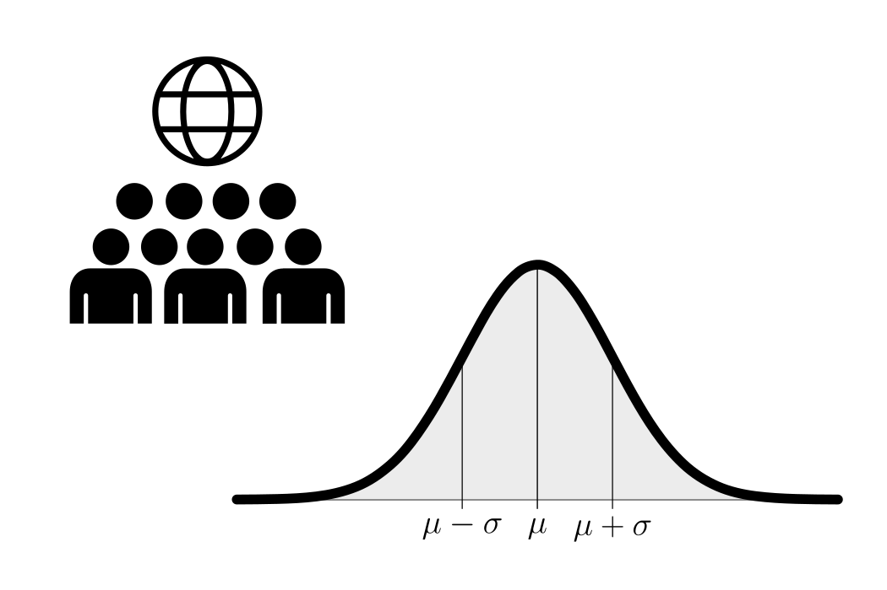
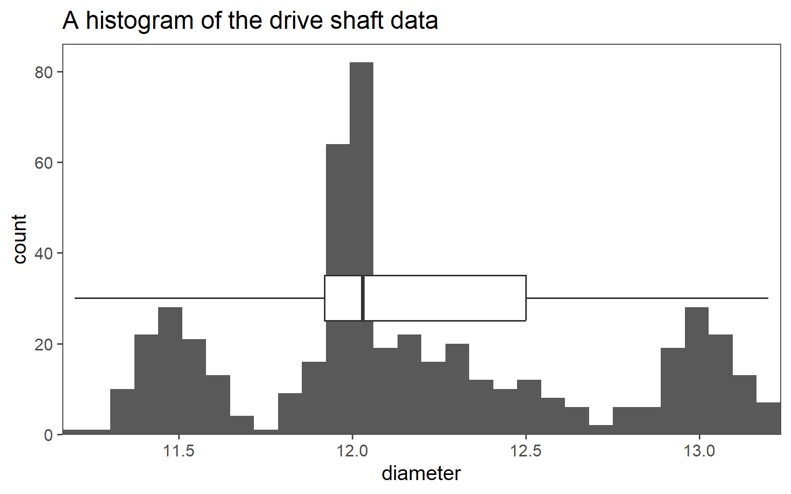
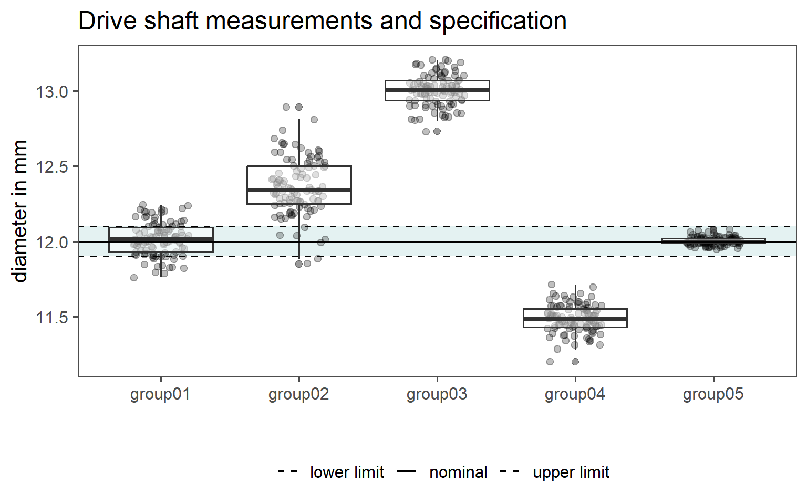

Basic Concepts
Probability
Overview
Probability theory is a fundamental concept in the field of statistics, serving as the foundation upon which many statistical methods and models are built.
What is Probability?
Probability is a mathematical concept that quantifies the uncertainty or randomness of events. It provides a way to measure the likelihood of different outcomes occurring in a given situation. In essence, probability is a numerical representation of our uncertainty.
Basic Probability Terminology
Experiment: An experiment is any process or procedure that results in an outcome. For example, rolling a fair six-sided die is an experiment.
Outcome: An outcome is a possible result of an experiment. When rolling a die, the outcomes are the numbers 1 through 6.
Sample Space (S): The sample space is the set of all possible outcomes of an experiment. For a fair six-sided die, the sample space is \(\{1, 2, 3, 4, 5, 6\}\).
Event (E): An event is a specific subset of the sample space. It represents a particular set of outcomes that we are interested in. For instance, “rolling an even number” is an event for a six-sided die, which includes outcomes \(\{2, 4, 6\}\).
Probability Notation
In probability theory, we use notation to represent various concepts:
- P(E): Probability of event E occurring.
- P(A and B): Probability of both events A and B occurring.
- P(A or B): Probability of either event A or event B occurring.
- P(E’): Probability of the complement of event E, which is the probability of E not occurring.
The Fundamental Principles of Probability
There are two fundamental principles of probability:
- The Addition Rule: It states that the probability of either event A or event B occurring is given by the sum of their individual probabilities, provided that the events are mutually exclusive (i.e., they cannot both occur simultaneously).
\[\begin{align} P(A \; or \; B) = P(A) + P(B) \end{align}\]
- The Multiplication Rule: It states that the probability of both event A and event B occurring is the product of their individual probabilities, provided that the events are independent (i.e., the occurrence of one event does not affect the occurrence of the other).
\[\begin{align} P(A \; and\;B) = P(A) * P(B) \end{align}\]
Example: Rolling a Fair Six-Sided Die

Probability in action - The Galton Board

Statistics and Probabbility
Define the problem
- The board has \(n\) rows of pegs (columns)
- Each ball has an equal probability of moving left or right (assuming no bias)
- The number of rightward moves determines the final position in the bins
Population

Sample
Descriptive Statistics
Histogram

Density plot

Boxplot

Average, Standard deviation and Range

Visualizing Groups
Boxplots

Mean and standard deviation plots

Half-half plots

Ridgeline plots

The drive shaft exercise
Introduction

Visualizing all the Data


Visualizing groups within the data
